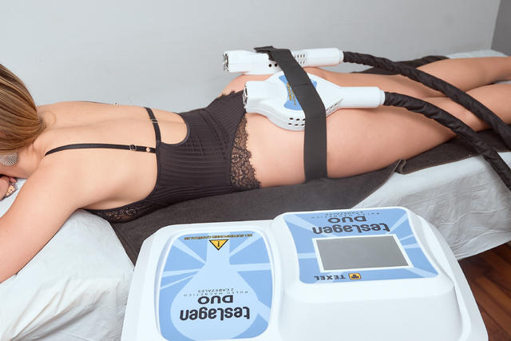

¿Conoces los beneficios del Body Up Pro?
Lograr la figura deseada nunca fue tan seguro y fácil. Desde que se hizo posible dejar a un lado
los tratamientos quirúrgicos y se desarrollaron técnicas que ofrecen resultados similares, sin
exponerse a los riesgos del bisturí, la anestesia y las sustancias químicas tóxicas, el mundo de
la estética dio un vuelco increíble. El Body Up Pro funciona como una alternativa fiable y
práctica para el levantamiento y reafirmación de senos, glúteos, abdomen, piernas, brazos y demás. Utiliza un
sistema de estimulación magnética neuromuscular, a través del cual se ofrece estímulos potentes
a los músculos.
